현재 표현 코드를 실행한 60Hz 검토 기록입니다. 비반복 상태는2초 강제 유지, 반복 모션은완전한2주기, 점프는 단계별 속도를 지정한 시험이며 실제 경기의 상태 수명과 구분합니다. 차지는 유지·해제 변형을 따로 선택하세요. 페이지 표시 자체가 QA 통과는 아닙니다.
ja-hyun/attack_air_heavy
공중에서 목도리를 머리 위에서 아래로 내려치는 단타. 시전자는 공중에 남고 피해자가 급강하한다.
전체 16프레임

ja-hyun/attack_air_light
발을 딛지 않은 공중 단타 펀치와 긴 목도리 리치. 새 점프·공격 잠금은 피해자에게 적용한다.
전체 16프레임

ja-hyun/death
마지막 기회 소진 시 사망·탈락을 표현한다.
전체 16프레임

ja-hyun/guard
두 손으로 몸 앞을 방어하고 공격 자세로 보이지 않는다.
전체 16프레임
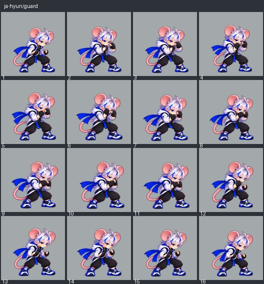
ja-hyun/hitstun
맞은 순간 반응과 짧은 경직을 구분한다. 스스로 공격하지 않는다.
전체 16프레임
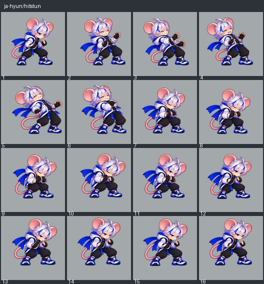
ja-hyun/idle
중립 대기 호흡과 작은 체중 이동. 공격·피격으로 보이지 않는다.
전체 16프레임

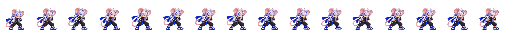
ja-hyun/knock_down
넘어져 쓰러진 피격자 자세를 유지한다.
전체 16프레임
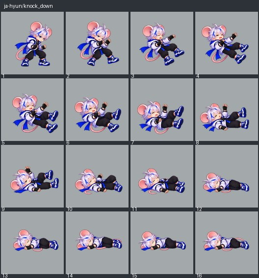
ja-hyun/launch
공중으로 밀려난 수동 피격 자세이며 도약 준비와 구별한다.
전체 16프레임
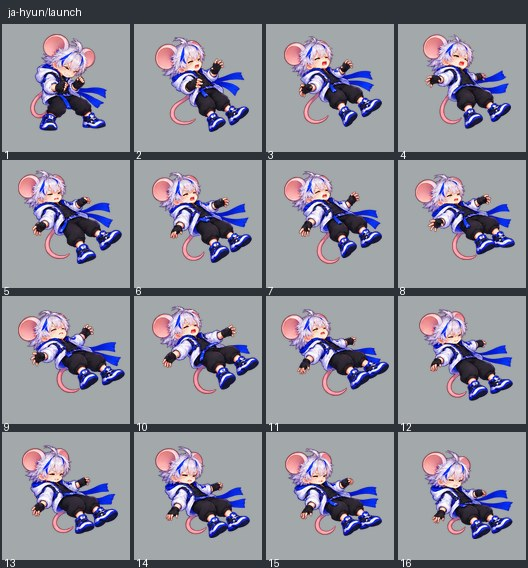
ja-hyun/ring_out
경기장 밖으로 밀려난 장외 탈락으로 자발적 공격과 구분한다.
전체 16프레임
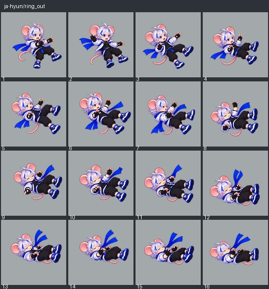
ja-hyun/spawn
새 기회로 등장한 뒤 준비 자세가 된다.
전체 16프레임
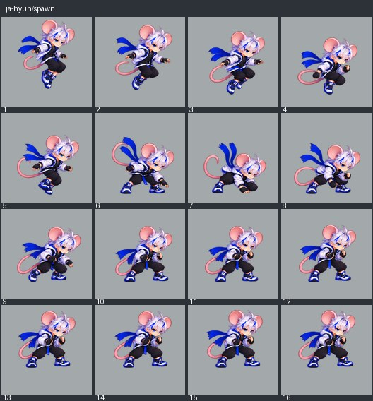
ja-hyun/special_neutral
긴 목도리를 전방으로 내민 뒤 당기는 단타 강공격. 착용 중인 목도리 천을 연결한 효과로180 리치와 끌기를 표현한다.
전체 16프레임

ja-hyun/special_scarf_sweep
넓은 지지 자세에서 실제 착용 목도리를 같은 공격 손으로 좌·우·위로 빠르게 교차하여 연속 쳐낸다. 준비4장→연타24장→회복4장. 1초10회 타격과 끌기 뒤 밀기는 전투가 계산한다.
전체 32프레임

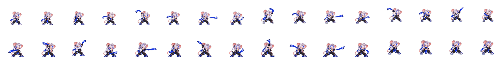
ja-hyun/wake_up
쓰러짐에서 다시 몸을 세워 일어나는 회복이다.
전체 16프레임
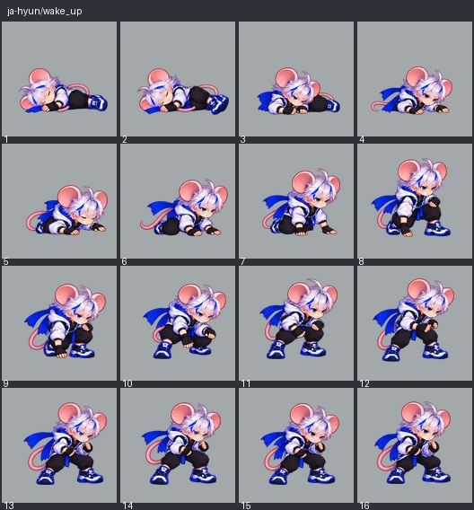
nabi/attack_air_heavy
공중에서 동일한 한 팔을 아래에서 위로 올려치는 단타. 반대팔은 몸 앞에 유지하고 시전자는 스스로 낙하하지 않는다.
전체 16프레임

nabi/attack_air_light
발을 딛지 않은 공중 단타 할퀴기. 긴 전방 리치와 피해자 추가 행동 제한을 표현한다.
전체 16프레임
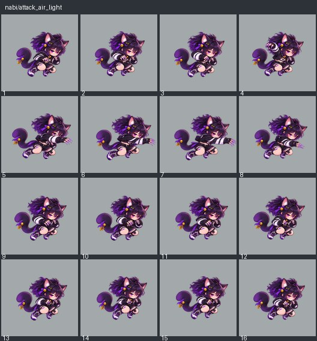
nabi/attack_heavy_up
지상에서 한 팔 어퍼로 상대를 위로 띄우는 단타. 차지나 복수 타격이 아니다.
전체 16프레임
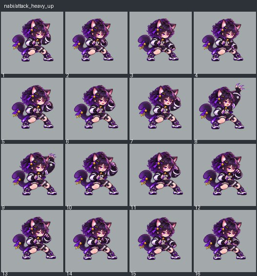
nabi/death
마지막 기회 소진 시 사망·탈락을 표현한다.
전체 16프레임

nabi/guard
두 손의 발톱을 몸 앞에 모아 방어하고 공격 자세로 보이지 않는다.
전체 16프레임
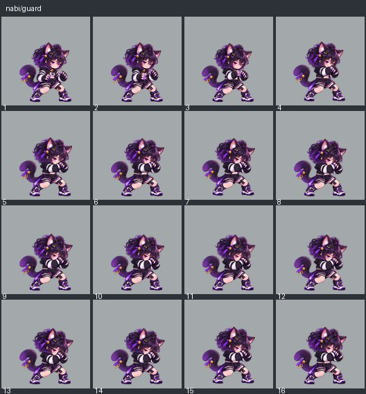
nabi/hitstun
맞은 순간 반응과 짧은 경직을 구분한다. 스스로 공격하지 않는다.
전체 16프레임
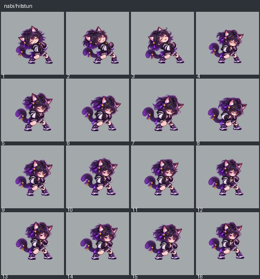
nabi/idle
중립 대기 호흡과 작은 체중 이동. 공격·피격으로 보이지 않는다.
전체 16프레임

nabi/knock_down
넘어져 쓰러진 피격자 자세를 유지한다.
전체 16프레임
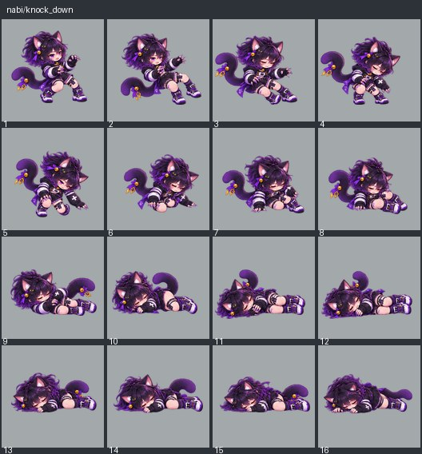
nabi/launch
공중으로 밀려난 수동 피격 자세이며 도약 준비와 구별한다.
전체 16프레임

nabi/ring_out
경기장 밖으로 밀려난 장외 탈락으로 자발적 공격과 구분한다.
전체 16프레임

nabi/spawn
새 기회로 등장한 뒤 준비 자세가 된다.
전체 16프레임
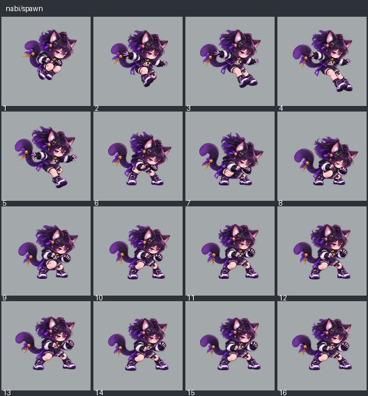
nabi/special_side
전용 낮은 이동 자세로 전진→첫 적 뒤 고정 종점에서 상대를 향해 돌아서 단 한번 할퀴기→정지. 자동 추적하지 않는다.
전체 32프레임
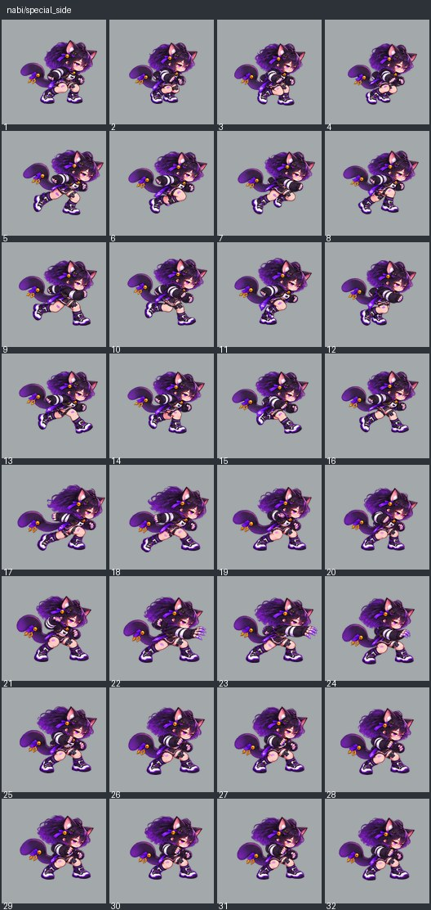
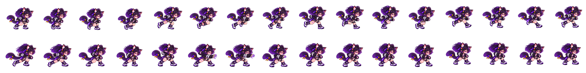
nabi/wake_up
쓰러짐에서 다시 몸을 세워 일어나는 회복이다.
전체 16프레임
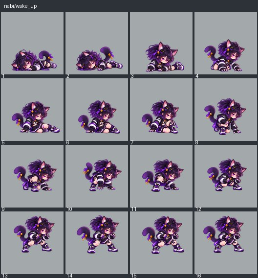